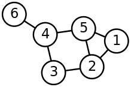
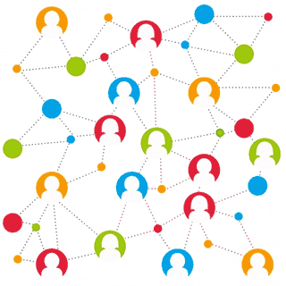

Facebook Graph API
De belangrijkste API van Facebook heet de Graph API. Graph staat hier niet voor een grafiek, maar voor een graaf. Een graaf is een verzameling van nodes die verbonden zijn met lijnen. Op dezelfde manier is de data van Facebook georganiseerd in objecten die met elkaar verbonden zijn. Nodes kunnen vanalles zijn, van gebruikers en pagina’s tot achievements en betalingen. Elke node heeft een eigen id. Een volledige lijst van de nodes is te vinden in de documentatie van de Graph API[1]
De Graph API werkt met HTML requests. Bijna alle apparaten waarmee je gegevens van Facebook wilt opvragen en gebruiken, zullen beschikken over de mogelijkheid om met HTML te werken. Hierdoor is het op heel veel verschillende apparaten mogelijk om gebruik te maken van de Graph API.
Je kunt de gegevens van een node opvragen als je het id weet. Sommige nodes zijn niet voor iedereen toegankelijk, net zoals op Facebook niet alle gegevens voor iedereen beschikbaar zijn. Daarnaast zijn voor sommige gegevens toestemming nodig van de gebruiker van de API. In dat geval zal Facebook toestemming vragen aan de gebruiker als iemand jouw toepassing wilt gebruiken. De gebruiker krijgt dan te zien welke rechten jij hebt aangevraagd en kan deze goedkeuren. Facebook zal deze toestemming onthouden. Dat kan doordat jouw toepassing in deze situatie een acces token moet gebruiken. Met die token kan Facebook identificeren welke toepassing gegevens opvraagt. Daarmee wordt dan gekeken of de gebruiker toestemming heeft gegeven of nog niet.
Het opvragen van de gegevens van een node kan simpelweg door de volgende HTTP request: GET graph.facebook.com/IDvanNode De belangrijkste node is natuurlijk de gebruiker. Als je een request doet met als id het id van een gebruiker, zul je in JSON alle gegevens krijgen die toegankelijk zijn met de acces token. Om het makkelijk te maken om gegevens te verkrijgen van de huidige gebruiker, is daar geen id voor nodig. Die zijn namelijk ook bereikbaar via “graph.facebook.com/me”. Als je niet alle gegevens wilt, kun je ook specifieke gegevens opvragen. Dit doe je door achteraan je request “?fields=” toe te voegen, met daarna de namen van de gegevens die je wilt opvragen. Zo kun je met “graph.facebook.com/me?fields=name,birthday” de naam en de geboortedatum van de huidige gebruiker opvragen. Daarnaast krijg je dan ook altijd het id van de gebruiker. Een volledige lijst met de gegevens die opgevraagd kunnen worden is te vinden in de documentatie van de Graph API[2].
Het is natuurlijk handig als je ook van bepaalde gegevens naar anderen kunt komen. Bijvoorbeeld als je de profielfoto’s van iemands vrienden wilt gebruiken of statistieken wilt geven over likes en comments van statusupdates. Dit kan door de lijnen tussen de nodes. Als je een node hebt, heeft die naast gewone gegevens ook gegevens van nodes die er mee verbonden zijn. Zo kun je veel verschillende gegevens bereiken en interessante dingen doen.
Daarnaast zijn er SDK’s voor verschillende platformen: iOS, Android, Javascript, PHP en Unity. Met behulp van de Javascript SDK is het mogelijk om Facebook elementen, zogenaamde Social Plugins[3] op een website te plaatsen. Dit kan een Like of Share knop zijn, maar ook een reactiesysteem.
Een kanttekening is wel dat niet alles zomaar kan. We hebben twee keer gehad dat we een leuk idee hadden en een paar uur besteed hebben aan het uitwerken, maken en testen. Dan kwamen we er achter dat het niet door een fout van ons kwam dat we geen gegevens terugkregen. Hoewel de documentatie van de API op het eerste gezicht laat zien dat je veel gegevens kunt opvragen, bleek het dat veel gegevens niet of niet zomaar opgevraagd kunnen worden. Zo is het bijvoorbeeld niet mogelijk om iemands vrienden op te vragen, tenzij die vrienden zelf de applicatie gebruikt hebben. Ook is voor veel gegevens extra toestemming nodig van Facebook. Dan moet je de toegang tot die gegevens voor je applicatie laten goedkeuren. Daarvoor moet je onder andere wat informatie over je applicatie opgeven. Houdt er dus voordat je begint rekening mee dat je goed moet kijken of je de gegevens die je wilt hebben wel echt kunt krijgen.